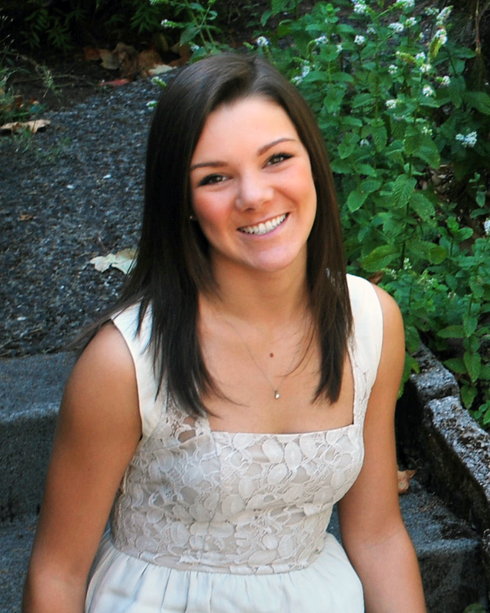

A little about myself...
I am currently a student at the University of Oregon and am going into my third year as a junior. I am pursuing a Business degree with a concentration in Marketing, while earning minors in Spanish, CIT, and Media Studies. I have a strong interest in web development/design and plan to incorporate these skills, along with my knowledge on media, in my marketing career. The combination of these three fields provides me with a unique comprehension of our ever-growing digital world, along with the tools to generate cutting edge and prosperous marketing approaches.
As you can tell, I am a girl of many interests. I simply want to experience all the amazing things that life has to offer. I embrace any new challenges that grant me the opportunity to learn and grow, which has proven to be tremendously rewarding. I continuously set high expectations for myself and constantly put forth my best effort in all aspects of my life. Being given only one life, I want to live mine to its fullest and see what I'm capable of.